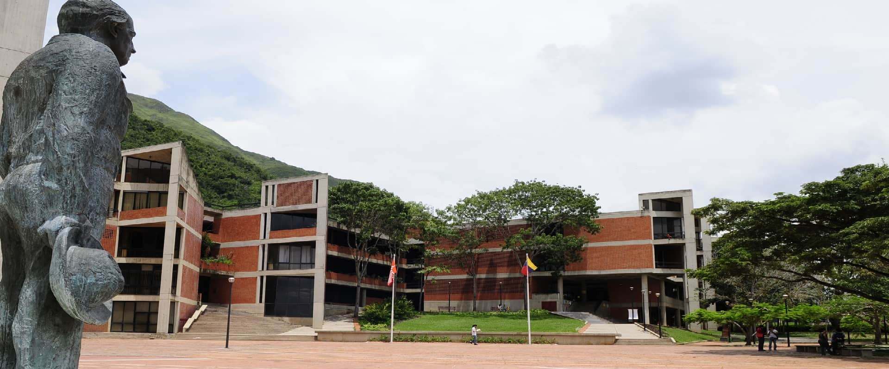

Boletín informativo presentado por el Equipo 5 del 3er trimestre de la Especialización de Tecnología, Aprendizaje y Conocimiento (2021-1) de la Universidad Metropolitana. Caracas—Venezuela.
Volumen 1, Edición 1. 4 de octubre de 2020

En este primer boletín, haremos un breve recorrido conceptual acerca de algunos términos que son de gran importancia para el quehacer docente en la actualidad:
TIC, TAC y TEP

Educación 2.0
Soy Docente, C.A.
Investigación, redacción y montaje: Mariel Briceño, Sandy Medrano y Omar Ferrer.
Coordinación del Área de Tecnología Instruccional II: Prof. María Cecilia Fonseca
Coordinación del Área de Evaluación y Recursos Digitales: Prof. Elvira Navas.
Distribuidor Metropolitano, Campus Universidad Metropolitana, Edif. Eugenio Mendoza Goiticoa, Piso 3, Dirección de Postgrado, Caracas, Venezuela.